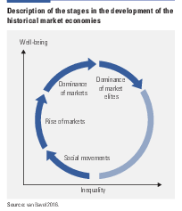
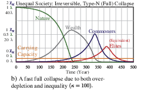

6 TRANSITION -THE FUTURE OF OUR WORLD
INTRO
Progress without Growth
The ongoing Great Acceleration with loss of biodiversity, climate change, pollution and urban expansion is inherent to capitalism as an economic system.
Doughnut economics, post-growth and degrowth are new ideologies that challenge mainstream conceptions of economic growth and offer valuable insights, but without breaking the current societal order.
But ‘Green transition’ to sustainability is an illusion. Decoupling of GDP-growth and resource consumption at a global level is not possible.
Technological change combined with voluntary changes in consumption and social practices are efforts to reduce the pressure on climate and nature while staying within the current economic order - it may dampen and delay the breakdowns.
Economic Growth - Capitalistic Accumulation - is a defining characteristic of Western Civilisation. As long as Capitalism prevails the breakdowns of Climate and Nature will go on.
But in the end broken climate and nature will undermine continued accumulation. Capitalism is over when economic growth stops.
New cultures, politics and institutions will have be be build democratically on the ruins of Capitalism.Change requires us to address these barriers democratically. Communities that live simply offer inspiration for social innovation in the new era.
The ongowing debate moves on an idealistic level:
“societies need to rethink what is meant by growth and progress and their meaning for global sustainability”
and stops there!
Progress without Capital
The deep structural changes needed affects the constituting features of Capitalism.
This means depowering today’s capitalists - and empower a new breed of sustainabilitilists.
Doughnut economy and degrowth are preludes to the required abandonment of capital accumulation.
We are headed for Transition away from Capitalism.
MEMO TRANSITION
This should be about transition proper - i.e. the period between Titanic hit the iceberg untill it disapears in the deep watched by the survivivors from their lifeboats.
Quick/Abrupt vs Protracted/Long transition
Emergence of non-capitalist spheres within dying capitalism
Willfull/revolutionary killing of the beast vs suicide vs strangulation by nature breakdon.
Social movements are to weak to raise eco-socialism today. Will have to wait for breakdown events that adds support to movement. Which event could that be?
that which does not confront the system becomes its instrument
elected governments should abolish poverty through a citizens income scheme, regulate against social and environmental malpractice and encourage environmental good practice through state procurement. At the same time, economic and political power should be devolved as far as is possible through co-operatives and increased local decision making. By putting political and economic power into the hands of the people most likely to be affected by environmental injustice, it is less likely that the injustice will take place.
the alternatives will emerge in the struggle.
Criticall mass - how can it be assessed. Speed of change. Acceleration?
Indicators of speed of change / critial mass?
Rød tråd: Energi ! Hall-Klitgaard
“We define a global polycrisis as any combination of three or more interacting systemic risks with the potential to cause a cascading, runaway failure of Earth’s natural and social systems that irreversibly and catastrophically degrades humanity’s prospects…A global polycrisis, should it occur, will inherit the four core properties of systemic risks—extreme complexity, high nonlinearity, transboundary causality, and deep uncertainty—while also exhibiting causal synchronization among risks.” https://boharvey.substack.com/p/on-the-polycrisis-part-i “there is no single vital problem,” yet simultaneously, “the general crisis of the planet is the number one vital problem A world subsumed by polycrisis becomes a kind of nightmarish ‘emergent system, A more worthwhile critic is Guney Isikara, who argues that ‘obscure jargon’ like ‘overlapping emergencies’ (a term adopted by the UN)13 and ‘polycrisis’ function primarily to conceal the way in which these crises are determined by capitalist social relations. https://developingeconomics.org/author/guneyisikara/
stricter constraints on private actions
escape the expansionary and accelerating dynamics of the capitalist economic ‘by design, not disaster’ (se durand_2023)
complexity tainter energy EROEI: we cannot expect ever-higher levels of complexity to always be achievable. (tverberg) According to Tainter, energy and complexity build on each other. At first, growing complexity can be helpful to a growing economy by encouraging the uptake of available energy products. Unfortunately, this growing complexity reaches diminishing returns because the easiest, most beneficial solutions are found first. When the benefit of added complexity becomes too small relative to the additional energy required, the overall economy tends to collapse–something he says is equivalent to “rapidly losing complexity.” simplification usually doesn’t happen voluntarily. growing complexity is seductive; the overall cost of complexity tends to grow over time.
left productivism - left libertarianism (Schmelzer intro)
changed metabolism !!!
changed property rights
END MEMO
6.1 Development Dynamics
It always seems impossible, untill it’s done.(Neslon Mandela)
Modern society has been able to grow far beyond Earth’s carrying capacity by using nonrenewable resources.
Civilizations are fragile, impermanent things.
6.1.1 Collapse of Societies
Societies become more complex as they try to solve problems.7 Social complexity can be recognized by numerous differentiated and specialised social and economic roles and many mechanisms through which they are coordinated, and by reliance on symbolic and abstract communication, and the existence of a class of information producers and analysts who are not involved in primary resource production. Such complexity requires a substantial “energy” subsidy (meaning the consumption of resources, or other forms of wealth).
When a society confronts a “problem,” such as a shortage of energy, or difficulty in gaining access to it, it tends to create new layers of bureaucracy, infrastructure, or social class to address the challenge.
Sustainability or collapse of societies follow from the success or failure of problem-solving institutions. Societies collapse when their investments in social complexity and their energy subsidies reach a point of diminishing marginal returns. Collapse occurs when a society involuntarily sheds a significant portion of its complexity.
6.1.2 State Crisis
Increasingly deminishing returns on exploitation of natural resources trigger state crises.8
Societies invest in increasing complexity of organisations to solve problems- requiring increasing amounts of energy for their maintenance. At the point where additional complexity costs more energy than it returns, societies are no longer able to solve their problems via more complexity. Complexity becomes a less attractive strategy, and some parts of society may make efforts to break away since secession and rebellion become more attractive. As productive capacity and accumulated surpluses decline, there are fewer reserves with which to deal with any shocks that occur.
Growing awareness of the finiteness of sources and sinks leads to more conflicts, social polarisation and political instability.
There are two broad kinds of crises: those that occur in conditions of ecological-economic sufficiency, and those that occur in conditions of worsening scarcity.
Scarcity crises occur when population growth and intensification leads to envi- ronmental degradation, in turn leading to increased conflict
State crises arise when the state starts to become perceived as ineffective or unjust, i.e. the legitimacy of state structures declines.
Disruption and diversion of trade flows may sharpen crisis
Potential outcomes of state crisis are:
- Repression
- Coup
- Entrenchment (of the elite)
- Reform
- Civil war
- Breakdown, conflict becomes protracted, violent, and divisive.
- Collapse, extensive depopulation, socio-political devolution, and loss of culture.
Breakdown and collapse are violent processes.
Prefigurative steps (from ecs - to be edited)
To get to an eco-socialist society, eco-socialists advocate working-class anti-capitalist
resistance but also believe that there is potential for agency in autonomous, grassroots
individuals and groups across the world who can build “prefigurative” projects for non-v
iolent radical social change.
Revolution
These prefigurative steps go “beyond the market and the state” and base production on the enhancement of use values, leading to the internationalization of resistance communities in an ‘Eco-socialist Party’ or network of grassroots groups focused on non-violent, radical social transformation. An ‘Eco-socialist revolution’ is then carried out.
Critical Mass
The main prefigurative steps “are that people ruthlessly criticize the capitalist system…. seizing the mind of the masses of people”, leading to “dynamic” and “exponential”, rather than “incremental” and “linear”, victories that spread rapidly.
Activities that have the “promise of breaking down the commodity form”. This includes organizing labor, which is a “reconfiguring of the use-value of labor power”; forming cooperatives, allowing “a relatively free association of labor”; forming localised currencies, which “undercuts the value-basis of money”
Building prefigurations around forms of production based on use values, which will provide a practical vision of a post-capitalist, post-statist system.
“go beyond the market and the state” by rejecting the supposed dichotomy between private enterprise and state-owned production, while also rejecting any combination of the two through a mixed economy. These present forms of “amphibious politics” are "half in the dirty water of the present but seeking to move on to a new, unexplored territory.
Open-source software, for example, opens up “a new form of commons regime in cyberspace”, is production “for the pleasure of invention” that gives “access to resources without exchange”.
Open source software has “bypassed” both the market and the state
A reform of the nature of money and the formation of a World People’s Trade Organisation (WPTO) that democratizes and improves world trade through the calculation of an Ecological Price (EP) for goods.
Followed by a transformation of socioeconomic conditions towards ecological production, commons land and notions of usufruct (that seek to improve the common property possessed by society) to end private property.
Wesley9
Human design and planning models are only beginning to glimpse how we might interact with these dynamic features of ecosystems and social systems, with, for example, flexibility and adaptive preparedness.
“Wicked problems” that defied linear solutions, contained contradictions, and implied solutions that may create or aggravate other problems. The climate crisis presents a wicked problem, beset with social, political, ecological, economic, thermodynamic, and chemical complexity, involving lags, thresholds, and feedbacks.
6.1.3 Rise and fall of market dominance
Development cycle of market based societies10
Markets emerge in an equitable setting and grow by creation of institutions that secure easy access to broad groups.
The opportunities of market exchange push up economic growth and well-being as long as the fruits of growth are fairly evenly distributed.
As markets become dominant - especially the markets for land, labour and capital - inequality grows in a slow process as ownership of land and capital concentrates.
As inequality grow, economic growth initially continues, but to a lesser degree get translated into broad well-being. Purchasing power stagnates for large parts of the population. Shrinking demand and declining profitability shift investments to financial markets away from productive sectors.
Wealth is instead used to acquire political leverage through patronage and buying political positions. Through their dominance in financial markets and their role as creditors of the state the wealthy acquire key positions in the fiscal regime, bureaucracy and finance.
Over time markets become less open and equitable, through both large wealth owners’ economic weight and their ability to skew the institutional organization. Productive investments declines and the economy stagnates. Economic inequality rises further, feeding into growing political inequity and social unrest, resulting in coercion, rebellion and breakdown.
After breakdown the process starts to build up anew from a position of more equal distribution of wealth and power.
6.1.4 Socio-environmental interaction
Complex systems modelling can reveal new and complex patterns and processes not evident when studied partially. Nonlinear systems often feature important dynamics which would be missed without bidirectional interactions between subsystems.
By adding accumulated wealth and economic inequality to a predator–prey model of human–nature interaction Motesharrei et al.11 developed a two-way coupled Human and Nature Dynamic model. The model shows that both economic inequality and resource overdepletion can lead to collapse, in agreement with the historical record. If total consumption does not stay within the carrying capacity collapse will emerge.
Results from the model show that an unsustainable scenario can be made sustainable by reducing per capita depletion rates, reducing inequality to decrease excessive consumption by the wealthiest, and reducing birth rates to stabilize the population. If such changes cannot be made in time, collapse will occur.
Thus timing of counteractions to the current development is critical. When we are too late breakdown is imminent.
6.2 Transition
Local populations in many cases greeted the barbarians as liberators. (Wikipedia / Tainter on Collapse of Roman Empire)
6.2.1 Breaking up trade patterns
The global economy is split regarding how economies and natural resources interact. Two different self-reinforcing feedback regimes exist.12
With “green-loop” feedbacks, economies depend directly on local ecosystems with visible environmental impacts.
With “red-loop” feedbacks, economies depend more on distant ecosystems with hidden environmental impacts.
The red loop, occurs when economies industrialize and urbanize. When entering the red loop, the dominant drivers of social–ecological interactions shift from ecosystem- based production (and a strong, direct reliance on local ecosystem services) to nonecosystem-based production, an increasing demand for nonecosystem services, and spatial upscaling of resource use due to increased reliance on nonlocal ecosystem services.
The green loop, occurs when the economies of countries with growing popula- tions remain directly reliant on ecosystem goods. This situation is typical of nations in which a majority of people depend directly on natural resources (e.g., agriculture, forests, or fishing). Increasing populations and traditional cultural practices (e.g., inherited land is divided between surviving children) often lead to reduced per capita resource availability, and typical wealth-generating red- loop industries (e.g., manufacturing, service provision) remain stagnant in a less productive economy.
The red and green loops represent a continuum in their early stages, but they gradually intensify and differentiate.
The coupling between income and population growth pushes countries farther away from sustainability through the red loop.
Economic growth alone cannot lead to environmental sustainability.
Sustainability requires breaking red feedback loops.
6.2.2 Flexible Dynamic Planning
Human design and planning models are only beginning to glimpse how we might interact with the dynamic features of ecosystems and social systems, with, for example, flexibility and adaptive preparedness.13
Tools for solving ecological problems must account for how living systems possess non-intuitive characteristics.
Living ecosystems are dynamic, always changing, and possess qualities such as thresholds, cascades, feedback loops, tipping points, lags, and generally unintended consequences to input.
Living systems exhibit both patterns and chaos, simultaneously, always changing, but change is neither continuous nor purely chaotic. Rather, change in complex systems appears to fluctuate among long periods of relative stability, punctuated by bursts of rapid change. These systems have no central control, and abrupt shifts can be triggered by a random input Some feedbacks self-regulate, some self-amplify. Events in such systems can stabilize or run out of control. Not all effects are immediately observable; some are delayed by centuries.
Some effects build up slowly over time and eventually reach a biological or physical threshold, a tipping point at which point tiny changes can yield a large and sudden response.
Sometimes random events or tipping points will trigger other tipping points in a cascade of effects similar to a nuclear chain reaction. A cascade can cause a complete, irreversible state shift in a complex system
Government of economies interacting with living ecosystems requires development of a quite new breed of dynamic and flexible planning institutions, methods and tools.
6.2.3 Collective Learning
Our emotional responses to crisis evolved over millennia, primarily to meet immediate needs, perhaps to benefit our tribe or community, not necessarily to solve complex, multi-dimensional, long-term dilemmas. Our ideas about “solutions” tend to be linear, short-term, and linked to a perception of simple cause and effect. Our educational institutions encourage this linear thinking about problems and solutions. Meanwhile, our social and ecological challenges are systemic, multidimensional, and complex.14
To avoid this ‘lack-of-learning-trap’ new institutions to ensure collective learning over generations must be developed - history matters.
6.3 Figures
6.3.1 Development Dynamics
6.3.1.1 Rise and fall of market dominance
Stages in development of Market Societies

Fig: Description of the stages in the development of the historical market economies. Source: Bas van Bavel (2019) Power concentration and state capture: Insights from history on consequences of market dominance for inequality and environmental calamities. (Spotlight 1.1 in UNDP Human Development Report 2019).
6.3.1.2 Socio-environmental interaction
Emergent Collapse by Depletion and Inequality

Fig: Simulation of Societal Collapse under depletion and inequality.Adding fossil fuels to the model will postpone the collapse by ~200 years and will increase the peak population by a factor of ~20! Reminiscent of the Industrial Revolution!15
C NEWS
Bavel, Bas van. 2019. “Power Concentration and State Capture: Insights from History on Consequences of Market Dominance for Inequality and Environmental Calamities.” In Human Development Report 2019, 60–63. UNDP. https://hdr.undp.org/system/files/documents//hdr2019pdf.pdf.
Joseph Tainter (1988) The Collapse of Complex Societies (pdf)↩︎
Hartley (2022) State crisis theory: A unification of institutional, socio-ecological, demographic-structural, world-systems, and peace and conflict research (pdf)↩︎
Motesharrei (2014) Human and nature dynamics (HANDY): Modeling inequality and use of resources in the collapse or sustainability of societies (pdf)↩︎
Cumming (2018) Linking economic growth pathways and environmental sustainability by understanding development as alternate social–ecological regimes (pdf)↩︎
Motesharrei (2014) Human and nature dynamics (HANDY): Modeling
inequality and use of resources in the collapse or sustainability of societies
(pdf)↩︎Cumming (2018) Linking economic growth pathways and environmental sustainability by understanding development as alternate social–ecological regimes (pdf)↩︎